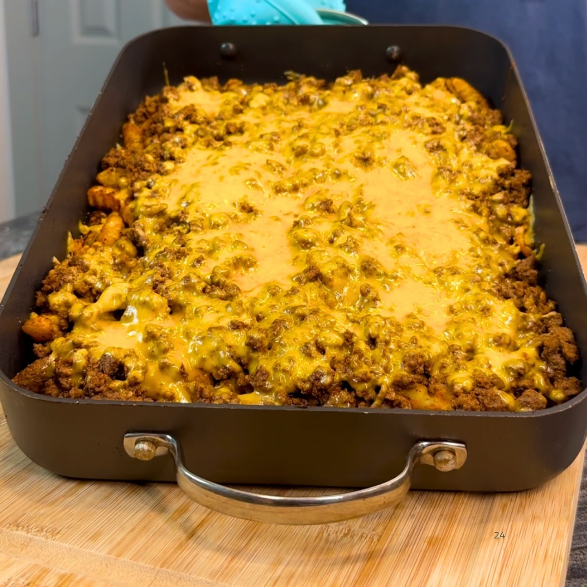

Papas Fritas Cheddar Cargadas
Ingredientes:
*6 porciones
- 1 bolsa de papas fritas congeladas de 1,32 kg
- 2 cebollas dulces cortadas en cubitos
- 737 g de carne de res magra (93%)
- 2 sobres de sazonador para tacos
- 80 g de cheddar sin grasa
- 150 g de cheddar reducido en grasa
- Sal
- Ajo
- Cebolla
- Paprika
- Comino
Instrucciones:
- Coloca las papas fritas congeladas en una bandeja para hornear y hornea según las instrucciones del
empaque.
- Coloca las 2 cebollas dulces cortadas en cubitos en una sartén a fuego medio-bajo y cocina hasta que
estén doradas/caramelizadas.
- Retira las cebollas y agrega la carne de res a la misma sartén. Cocina a fuego medio-alto, luego
sazona con el sazonador para tacos y agrega 1/3 de taza de agua. Cocina a fuego lento hasta que
espese y esté completamente cocida.
- Una vez que las papas fritas estén listas, retira la bandeja del horno. Condimenta inmediatamente
con sal, ajo, cebolla, paprika y comino, y revuelve para cubrir.
- Arma tus papas fritas cargadas: comienza con el cheddar sin grasa, las cebollas cocidas, la carne de
res sazonada con tacos y luego el cheddar reducido en grasa como capa superior, junto con ajo y
comino. Gratina a fuego alto durante 2-4 minutos o hasta que el queso se derrita por completo.
Divide en 6 porciones iguales y ¡disfruta!